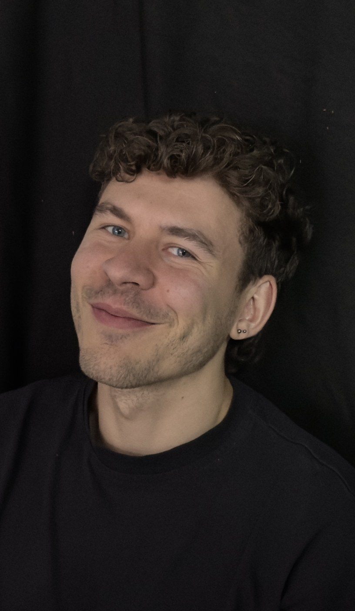

Nils Düren is a freelance editor and video artist based in Berlin. His focus is on narrative storytelling in fiction, documentary, and hybrid forms. Trained in dramaturgical analysis and methodical editing at Filmuniversity Babelsberg KONRAD WOLF, he identifies the core of every story to support and help bring the director's vision to life.
Every cut begins with an unguarded encounter: letting the footage speak before judgement sets in. From there, the work becomes a dialogue, understanding the tone, atmosphere, and core the filmmakers set out to capture. Only then does structure emerge: characters take shape, performances are weighed, dramaturgy becomes the skeleton that lets the film breathe. The aim, always, is an arrangement of image and sound that makes the emotion felt.
Film Projects (selected scenes)
Video & Sound Installations

Study
- Since 2025
- Montage (M.F.A) at Filmuniversity Babelsberg KONRAD WOLF
- 2021–2025
- Montage (B.F.A) at Filmuniversity Babelsberg KONRAD WOLF
- 2016–2019
- Film Studies and Philosophy (B.A) at JGU Mainz
Work
- Since 2021
- Postproduction and production operations for film projects as well as image movies/advertisements for small companies
- 2020–2021
- Intern at Deauville Green Awards (organization and execution of the film festival in Paris and Deauville)
- 2016
- Intern at real&fiction Film- and TV Production, Cologne